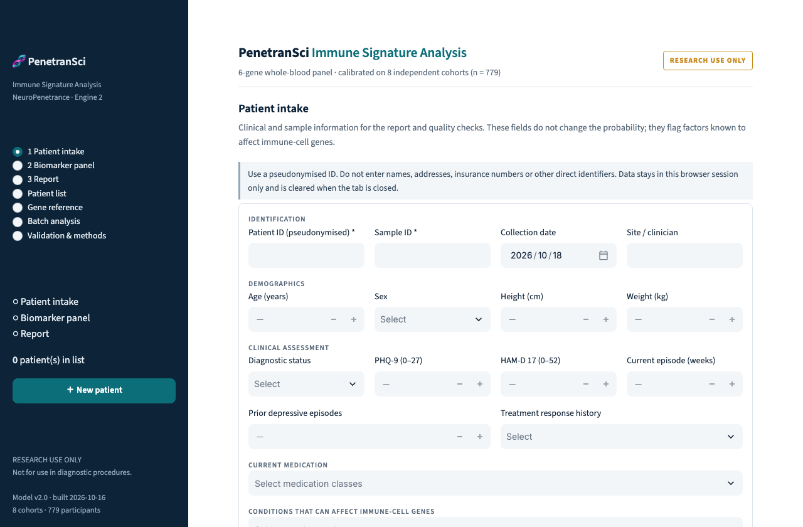
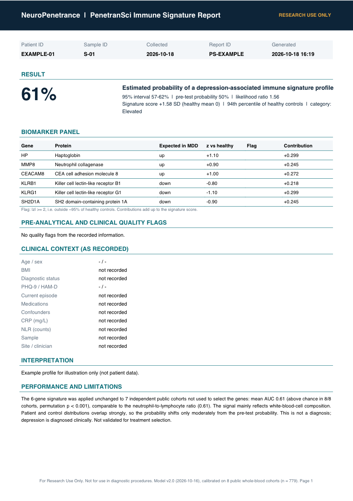

Eine Engine für Genexpression im Blut – und eine App, um sie zu nutzen
PenetranSci macht aus einem kleinen Panel von Immungenen, gemessen im Vollblut, ein verständliches Profil für jede Person: einen Score, eine kalibrierte Wahrscheinlichkeit und die Gene dahinter.
Vollblut-RNA
Genexpression aus Vollblut, gesammelt in PAXgene- oder Tempus-RNA-Röhrchen und gemessen mit RNA-Sequenzierung, Microarray oder einem gezielten qPCR-Panel. Keine DNA und keine Proteine.
Eine 6-Gen-Immunsignatur
Drei Entzündungsgene (HP, MMP8, CEACAM8) und drei Lymphozytengene (KLRB1, KLRG1, SH2D1A), jeweils verglichen mit gesunden Kontrollen. Eine Gruppe minus die andere, ohne verstecktes Modell, kalibriert an 779 Personen.
Ergebnisse, mit denen Sie arbeiten können
Einen Score und eine kalibrierte Wahrscheinlichkeit pro Person, die Genbeiträge, die entzündliche Untergruppe, Ergebnisse für ganze Kohorten und einen schriftlichen Bericht.
PenetranSci – direkt ausprobieren
Bewerten Sie eine einzelne Probe oder eine ganze Studie, lesen Sie die Genreferenz und laden Sie einen PDF-Bericht herunter. Patientendaten bleiben in der Browsersitzung und werden nie auf unseren Servern gespeichert.
- Patientenaufnahme mit automatischen Qualitätshinweisen (Infektion, Steroide, hohes CRP, RNA-Qualität)
- Kalibrierte Wahrscheinlichkeit mit 95-%-Intervall und Likelihood-Ratio
- Batch-Analyse ganzer Kohorten mit AUC auf Studienebene
- Genreferenz: Biologie, klinische Nutzung und Relevanz für die Wirkstoffentwicklung
- Auf Englisch und Deutsch


Datenschutz und Research Use Only
- Research Use Only: kein Medizinprodukt und nicht für diagnostische Zwecke bestimmt
- Partnerdaten werden auf Basis einer Datennutzungsvereinbarung in der EU (Frankfurt) und DSGVO-konform verarbeitet
- Die App speichert keine Patientendaten auf dem Server
- Offene Methoden: Die Ergebnisse jeder Studie sind veröffentlicht – auch das, was nicht funktioniert hat